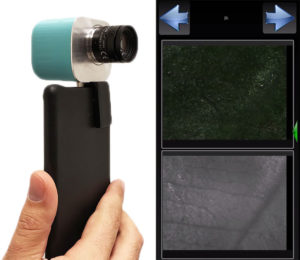

1.High-definition spectral photography. Spectra based photography (spectral photography) expands color gamut for unparalleled color reproduction fidelity.
2.Video-rate display of one color and of several spectral images side-by-side. Exploits spectral characteristics to enable the visualization of hidden structures in real time.
3.Real time display of a full spectrum for every, mouse selected, pixel on the real-time displayed spectral images. Enables spectroscopy to be performed in moving and/or changing targets.
4. Video-rate display of color-coded spectral maps with different artificial colors representing different classes of spectra. Enables hand held operation for examining objects, where altered artificial colors comprise a real time “red flag” for structural changes or abnormalities.
5.The camera has a universal C-mount thread, which gives freedom to select a wide range of lenses and optical probes that can fit to almost all size and location of the target object.
6.The camera can be detachably attached to the OTG port of any mobile phone or tablet. It can also be connected with any host computer with a USB 3.0 cable. Wireless versions are also available.
7.The operational spectral range of the camera is very wide (400-1100nm) including visible and non visible bands of the spectrum.
8. The camera produces 30 spectral images plus one color image with a single shot. The spatial resolution of the acquired spectral cube images is selectable up to 5MP each.